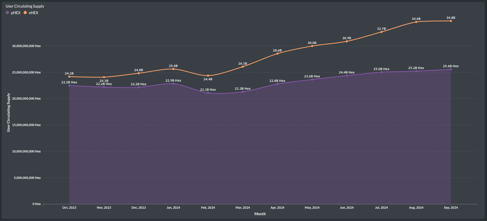

ü•æWe're back, and not just in terms of price! #Staking is coming in stronger for #HEX than in previous months. Let's dive into the $HEX monthly report.
Over 6k new #HEX stakes were started in September, returning to March levels earlier this year. Confidence in $eHEX staking has significantly grown, with over 1k stakes now, surpassing March numbers and approaching February counts.
An impressive 12 billion HEX was staked, of which 8 billion is $pHEX, showing growth and surpassing the lower figures seen during the summer.
The average staking length remains strong at 1,200 days (3.3 years) for new stakes made in September.

The average locked-up HEX is only slightly decreasing as prices rise and more people stake. That makes total sense to me. Stay tuned for more coming these days!
üíπThe trend for #HEX is undeniably positive. Let's examine the net flow into staking.
While the average price of combined HEX rose to $0.0084 in September (price is now double from that ;) ), the net flow remained on a positive trajectory toward 0 and stood at -$1.1M. This means that $1.1M in net value exited the staking pool in September. However, this is small compared to previous months, as you can see. In July, the net flow was still at -$9.4M. The trend toward positive numbers is clear, with August showing a positive net flow of +$500K, which is quite close to September's figure. Will we see a permanent reversal soon?

The positive trend is also visible in the staking start-to-end ratio, which is still below 1 on both #Ethereum and #Pulsechain, but it is stabilizing for $pHEX and recovering for $eHEX, especially. For $eHEX, the ratio improved from 0.26 last month to 0.35. A ratio above 1 would indicate that more stakes are starting than ending.
üèÉ‚Äç‚ôÄÔ∏è#HEXICANS were more active in September, onboarding more new users than in previous months. Back to April adoption numbers overall. See the charts in Part 2 of the #HEX monthly report on Adoption.
3.8k new users (addresses) were onboarded to $HEX, either on $eHEX or $pHEX. This marks the third consecutive month of growth, reaching levels similar to April this year.

The combined number of unique active native HEX users across both chains, #Ethereum and #Pulsechain, increased and is now back to April levels, with 24k active users last month.

Most of the growth came from $pHEX, which saw 21k active users, while $eHEX saw a slight increase to 5.8k. Keep in mind, these numbers represent native addresses and do not include $eHEX users on #Pulsechain, which would add to this total.
ü뮂Äçüè≠The total cumulative number of HEX users increased to 455k, while active HEX stakers saw only minimal growth, practically stagnating.
Most new users are joining pHEX, although eHEX users have also increased. pHEX has 416k users, while eHEX has 394k overall users in September. The combined unique users make up 455k native HEX users, with consistent growth every month.
While the user base is growing steadily, staking is predominantly done by established HEXICAN participants. The number of active stakers increased slightly due to only ~300 new active stakers in pHEX, signaling a shift from a slight decline to a slight growth in active staker numbers. However, eHEX active stakers continue to decline month after month.

üí∏After some rest, let's continue the #HEX monthly report with Part 3: Yield.
In September, $pHEX saw its second-highest monthly yield at 44.2%, but this was only for non-penalized stakers. The other categories showed stagnation in yield numbers compared to the continuous rise in previous months. This is likely due to an increase in staking activity, including also more short-term stakes, which caused yield growth to pause. They are quite high anyway ;)
However, $eHEX yield remains higher, averaging 51.8% and reaching up to 71.7% when stakes with penalties are excluded.

Looking at the APY numbers, there is an overall slight decline, particularly in 4-year stakes, which dropped to 54% APY.

☝️ Double the penalties for naughty $pHEX Stakers in September. (part 5)
Penalties have increased on #HEX staking while the price was rising in September. This increase is solely due to doubled penalties on #Pulsechain, which reached 100M HEX in penalties. Combined with $eHEX, the total reached 158M. However, this is peanuts compared to the penalties before the summer.
We've seen the number of late stakes on Pulsechain rise to 1.7k, while on #Ethereum it was lower than in August.
Emergency end stakes (EES) also increased on the Pulsechain side, reaching 520, while $eHEX EES decreased.
The ratio of EES stakers to active stakers tells the same story. On the Pulsechain side, 0.14% of stakers emergency-ended their stakes, while on the Ethereum side it remained at 0.07%. It seems that enough stakers were shaken out on the ETH side, and the price increase is no longer causing them to react.

ü•ßThe #HEX user circulating supply has just stopped growing. Here is Part 6 ‚Äì the supply section of the HEX monthly report.
There is still a bit of growth in user circulating supply, but it stopped significantly in September, as you can see in the chart. pHEX has been quite steady and remains at no more than 25.6 billion. The steep increase in eHEX user circulating supply stopped and was similar in September to August, hovering around 34.8 billion.

The user market cap, on the other hand, has increased and surpassed the levels of the past three months. The combined HEX user market cap is now at $236.7 million, with $173 million in pHEX and $64 million in eHEX. This is excluding the OA-owned circulating supply and staked supply, of course.
The distribution of relative ownership in HEX continues: The OA is getting further diluted, and it is estimated that it now owns only 95.69% of pHEX and 94.24% of eHEX circulating supply.
#HEX is seeing significant usage, returning to February levels. Part 7 - Usage
In September, there were 255k transactions made natively with HEX, reaching the same levels we saw in February. Of these, 18k were native eHEX transactions. There are likely many more eHEX transactions on Pulsechain that I haven't included. I am working on that.

Most of the pHEX activity was again driven by MEW/arbitrage bots, accounting for 42% of all transactions, followed by 25% swap activity, where the new PulseX Swap Router processed 11.5% of all transactions, closely followed by the Piteas Router with 10.4%. By the way, can someone explain the TGC token to me? There were 1,840 transactions, or 0.8% of all HEX transactions, made through the TGC/HEX liquidity pool. I have no idea what it is, so this is not an endorsement. I'm just curious?
Looking at eHEX native transactions, swap activity dominates this time with 30% of all transactions, followed closely by administrative transactions at 28.5%. Staking accounted for a significant 22%, with stake ends being the most dominant, making up 16% of all transactions. It is the most frequently used feature when analyzing detailed activity. By the way, Metamask swap routing was relatively high, suggesting the presence of new users who haven't used aggregators or Pulsechain before. Metamask routing accounted for 5.6% of all eHEX transactions.
Part 9 of the #HEX monthly report covers eHEX trading on Ethereum.
We observed an increase in all metrics across the following HEX pools integrated with Uniswap: USDC v2, v3, and ETH v3. There were more swaps overall, with buy swaps increasing more than sell swaps, widening the gap once again.
Additionally, the number of buyers significantly outpaced sellers, totaling 810 buyers versus 590 sellers.
The buy volume exceeded the sell volume on Ethereum again in September. Buying volume on the Pulsechain side was also positive this time, resulting in the price increase, as indicated on Dexscreener and evidenced by the recent price pump last month.
Good news, pulsex v2 eHEX-pHEX pool is loaded until August this year and uniswap ETH v2 pool is loaded until January this year. Soon those can be analysed as well. ;)
Last but not least, for the #HEX lovers who don't care about short-term volatility, I personally pledge my allegiance to HEX every year by staking for 5555 days. Here is the report on the 5555 club:
Similar dedication was shown in September, with around 600 stakes for 5555 days, just like in August, 92 of which were eHEX stakes.
The amount of HEX staked for the maximum length was again over 90 million, but this time, eHEX took the lead, representing 52% of the total amount staked for this duration.
Twenty-four new dedicated believers joined, bringing the number of active max stake length 5,555 stakers to over 39,000.
With this, we conclude the monthly report and I will provide a summary of the Q3 numbers in the coming days.